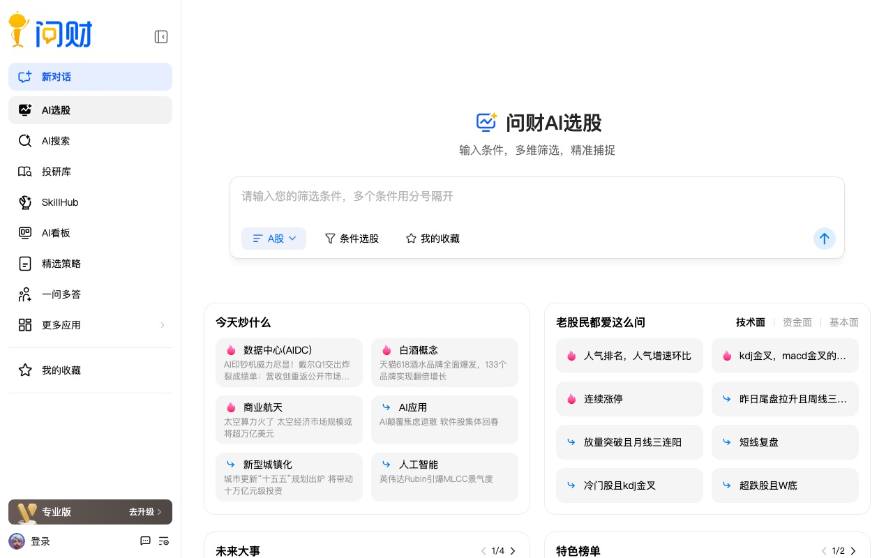
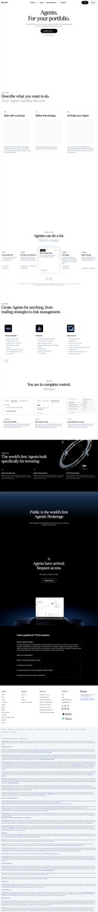
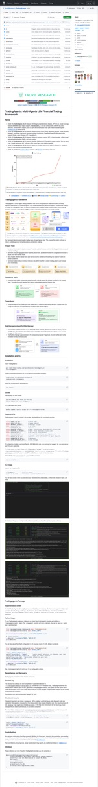
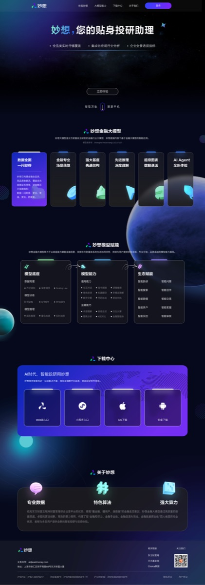

市面上"用 AI 炒股/投资"的产品,到底分几类、各自怎么用、长什么样。一张看得懂的全球地图,拿同花顺的 AI 助手当参照。
说明 这是一份中立的行业地图,结论都来自公开多源交叉验证,不替任何产品站台。文中钱数是区间估计;这行业变得快,半年后名单可能就旧了。配图标"官网实拍"为真实截图,标"示意图"为按官方描述绘制的界面示意(原站有反爬拦截无法实拍)。
每一类干的活不一样:有的给股票打分,有的替你管钱,有的陪你聊,有的是底层的 AI 大脑,有的让一群 AI 组队干活。
| 这类产品 | 一句话说它干啥 | 代表 | 靠不靠谱 |
|---|---|---|---|
| AI 选股打分 | 给每只股票打个分,猜它接下来涨不涨 | Danelfin · 问财 · 妙想 | 高 |
| 机器人理财 | 你把钱交给它,自动帮你买卖、配置 | Betterment · Wealthfront | 中 |
| 会聊天的投研助手 | 你问它答,把研究能力塞进炒股 App | 问财 · Public Alpha · AlphaSense | 高 |
| 财经专用大模型 | 专门读财报新闻训练出来的 AI 大脑 | BloombergGPT · FinGPT | 高 |
| 一群 AI 组队炒股 | 多个 AI 分工(分析师/交易员/风控)一起决策 | FinRobot · TradingAgents | 高 |
| 盯盘+定制分析 | 定期帮你盯、你问啥它分析啥 | 妙想 · 问财 | 高 |
每个产品讲清楚三件事:它是干啥的、打开长什么样、你具体怎么用。
给股票打个 1 到 10 分,分越高,它觉得接下来三个月跑赢大盘的概率越大。
代表是 Danelfin。注意:这类产品里的"AI"其实是传统机器学习(机器从历史数据里找规律),不是现在火的那种聊天大模型。它每天给每只股票看 900 多个指标(技术面 600、财务面 150、情绪面 150),算出一个分。最大卖点是它会告诉你为什么打这个分,不是黑箱。
登录后是总览面板,显示大盘概况和当下高分股。想看某只股直接搜,它给出 AI 评分 + 拆开的子分数(技术分高、财务分低 = 短期有势头但估值偏贵)。还能建自选组合,跟踪它跑得准不准。
你设个目标、定期存钱,它自动帮你买一篮子基金、定期再平衡,基本不用你管。
行话叫 Robo-advisor(智能投顾,机器人帮你理财)。这块市场不小:2023 年全球约 66 亿美元,预计 2030 年到 418 亿美元——年均复合增长率 30.5%(CAGR,就是平均每年涨百分之多少)。有意思的是,卖得最好的不是纯机器人,而是"机器人+真人顾问"混合款(2023 年占了行业收入的 63.8%)。
你用大白话问"这只股最近咋样",它直接答,不用你自己翻一堆财报新闻。
这就是同花顺 AI 助手那一类。中国典型是问财,美国对标是 Public Alpha 和 AlphaSense。背后是聊天大模型 + RAG(RAG = 让 AI 先去查资料、再根据资料回答,不瞎编)。

不用学写公式,直接拿大白话描述你想要啥股,它就帮你筛出来。国内落地最成功的自然语言选股。

美国炒股 App Public 里内置的 AI 助手(基于 GPT-4)。任意股票页下拉、或网页版鼠标放到走势图上,就能对话。能比大盘、拉新闻,财报电话会一开完两小时内给你总结。
面向机构分析师的专业版。在 5 亿+财报、电话会、研报、专家访谈里用大白话提问,给综合答案,而且每句话标出处方便核对。属专业付费工具。
专门拿海量财报、新闻喂出来的 AI 大脑,是上面那些产品的"底层引擎"。
行话叫 FinLLM(专门读财经的大模型)。这里有个很有意思的两条路线对撞,成本差到 1 万倍:
BloombergGPT:彭博自己从头训练,500 亿参数,估算花了约 267 万美元。料是彭博独家财经数据。
FinGPT(开源):不从头训,拿现成开源模型小改一下(行话 LoRA 微调),每次不到 300 美元。把这能力拉到了平民价。
不是一个 AI 单干,而是几个 AI 分工——有的当分析师、有的当交易员、有的当风控,开会吵出一个决策。
行话叫 LLM-Agent 编排(让多个 AI 像团队一样协作)。代表是 TradingAgents,直接照搬了一家真实交易公司的组织架构(7 个角色)。目前这类大多还是开源研究原型,成熟商业产品很少。

① 四个分析师(财务/情绪/新闻/技术)各出报告 → ② 一个唱多一个唱空正反辩论 → ③ 交易员拍板 → ④ 风控团队把关 → ⑤ 基金经理批准执行。整套像一家公司开投决会。
一群 AI 怎么分工 ├── A. AI 当交易员(直接说买还是卖) │ ├── 看新闻做判断 │ ├── 会复盘、有记忆 │ ├── 唱多唱空互相辩论 │ └── 拿历史回测当奖励反复练 └── B. AI 当"找信号的矿工" └── 产出能预测涨跌的信号,喂给下游量化系统
定期帮你盯市场、你问什么它分析什么,偏"陪伴式"的投研助理。
和第 3 类有重叠,代表是妙想(东方财富)和问财。妙想是东方财富自研的财经大模型,2025 年 3 月起在东方财富 App 里免费开放,能问答、诊股诊基、分析行情、选股、解读热点。是国内首批通过网信办备案的金融大模型。

在东方财富 App 或妙想网页版输入指令,AI 处理后用文字+图表给结果。有"妙想问答""研报总结""股票分析"等工具,还能翻译英文研报。打法是 C 端免费引流,靠平台生态变现。
一句话分清:哪些是现在火的"聊天大模型",哪些其实是老牌算法。
| 实现方式 | 是聊天大模型? | 用在哪类 | 代表 |
|---|---|---|---|
| 传统机器学习(从数据找规律) | 不是 | AI 选股 | Danelfin |
| 规则+算法配置 | 不是 | 机器人理财 | Betterment |
| 烧钱从头训大模型 | 是 | 财经大模型 | BloombergGPT |
| 开源模型小改(微调)+查资料 | 是 | 财经大模型 | FinGPT |
| 聊天问答+诊断 | 是 | 投研助手 | 问财/妙想/Alpha |
| 多个 AI 组队协作 | 是 | 组队炒股 | TradingAgents |
同样是炒股 AI,喂给它的数据决定了它能看多准。
| 数据类型 | 用得多吗 | 说明 |
|---|---|---|
| K线/技术指标 | 普遍 | Danelfin 600 个指标、各家助手都用 |
| 财报/估值 | 普遍 | 妙想、问财、Danelfin |
| 新闻/舆情情绪 | 普遍 | 看新闻做判断的 AI 都用 |
| 第三方买来的行情 | 普遍 | Xignite 供给 Public/Robinhood 等 |
| 另类数据(卫星图/信用卡流水) | 没查到 | 验证过的产品里几乎没见,实际用多少不明 |
从完全不懂的小白,到写代码的工程师,五种人对应不同产品。
| 这种人 | 想要啥 | 用哪个 |
|---|---|---|
| 普通小白 | 想省心理财 | 机器人理财(Robo-advisor) |
| 爱琢磨的散户 | 想要能解释的打分 | Danelfin |
| 爱聊的散户 | 大白话问股 | 问财 / 妙想 / Public Alpha |
| 机构分析师 | 专业投研要出处 | AlphaSense |
| 工程师/研究者 | 想折腾底层 | FinGPT / 组队炒股(多为开源) |
老实说:哪些说法被我们查掉了,哪些数据没查到。
查掉了 · 没采信
技术细节像营销话术,查不到独立证据
原论文的这个验证站不住
三票全否
没查到 · 待补
本想中美欧并重,但欧洲本土产品、市场规模、监管影响都没找到足够证据(只有 Danelfin 覆盖部分欧股)
除了机器人理财的总市场规模,单个产品有多少人用、赚多少钱,都没公开数据
订阅多少钱、抽不抽佣、按资产比例还是免费引流,缺可比数据
卫星图、信用卡流水这类数据,各家实际用到什么程度不明
结论都能往回查。
danelfin.comiwencai.comai.eastmoney.compublic.com/alphaalpha-sense.comxignite.com
2303.17564 BloombergGPT2306.06031 FinGPT2405.14767 FinRobot2412.20138 TradingAgents2408.06361 综述
Grand View Research东方财富官网/新浪财经